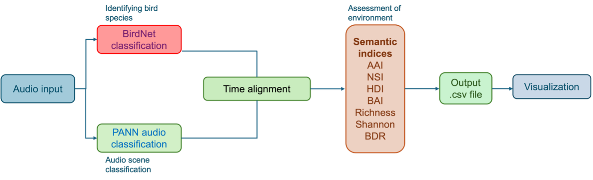

By the end of this chapter, you should be able to
- Describe an end-to-end pipeline.
- Explain windowing, batching and parallel inference.
- Recognise CPU, GPU and storage roles.
- Identify quality-control and reproducibility requirements.
One-hour learning plan
Part 1 · Guided reading — 15 minutes
Pipeline stages
A workflow discovers files, reads metadata, validates audio, segments recordings, runs classifiers, aggregates outputs, computes indices and writes structured results.
Windowing and batching
Short windows provide temporal detail. Overlap can reduce boundary effects, but adjacent detections are not independent observations. Batching can improve throughput.
Computational resources
CPU is useful for file handling and aggregation. GPUs can accelerate compatible inference. Verify the actual backend and device rather than assuming GPU use.
Quality control
Track successful files, files with no detections, failures, model versions, settings, timestamps and processing logs.
Project case study · The automated soundscape-analysis pipeline
The following diagram is reproduced from Figure 6 of the project outcomes report. It is the overall architecture for the module: a recording is analysed by PANNs and BirdNET in parallel, their outputs are temporally aligned, semantic measures are calculated, and the results are written to a CSV file for visualization.

Stages in the pipeline
- Audio input: load environmental recordings in WAV format.
- Windowing: divide each recording into overlapping analysis windows while retaining time information.
- Parallel inference: apply PANNs for acoustic-event classification and BirdNET for candidate bird-species identification.
- Output cleaning: validate and organize BirdNET detections, including non-bird filtering and duplicate resolution.
- Time alignment: associate cleaned BirdNET detections with the corresponding PANNs analysis windows.
- Semantic measures: calculate AAI, NSI, HDI, BAI, species richness, Shannon diversity and BDR for each window.
- Structured output: save categories, predictions, bird detections, temporal metadata and indices in CSV format.
- Visualization: summarize temporal patterns, natural and anthropogenic activity and detected bird species.
Practical activity
Students receive a small recording and a partially completed Python pipeline. Their task is to inspect the two model outputs, align detections to analysis windows, calculate at least AAI, NSI and BAI, and export a tidy CSV file. If running both models is not feasible in class, provide precomputed outputs for the integration exercise.
Part 2 · Practical activity — 30 minutes
Design a processing workflow
- Draw a pipeline from WAV files to final CSV.
- Mark where PANNs and BirdNET run in parallel.
- Identify CPU, GPU, storage and memory stages.
- Add at least three quality-control checks and a failure log.
Part 3 · Reflection and knowledge check — 15 minutes
Reflection prompt
What information would another researcher need to reproduce your analysis?